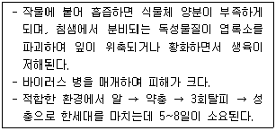

원예기능사 (2010-03-28 기출문제)
1과목: 임의 구분
1. 우리나라에서 플라스틱하우스 난방에 가장 많이 이용되는 것으로 난방효율이 높고 설치가 용이하며 시설비도 저렴할 뿐만 아니라 예열시간이 빠른 난방설비는?
- 온풍난방
- 증기난방
- 스토브난방
- 온수난방
(정답률: 100%)

2. 농도가 60%인 유제 100mL를 0.⑤%로 희석하려 할 때 필요한 물의 양은? (단, 비중은 1 이다.)
- 600L
- 425.9L
- 230.5L
- 119.9L
(정답률: 64%)
3. 증산작용이 활발하게 이루어지면서 직사광선에 노출되지 않은 상태에서의 엽온(葉溫)변화는?
- 기온보다 높다.
- 기온과 같다.
- 기온보다 낮다.
- 생육 최적온도를 유지한다.
(정답률: 82%)
4. 시설재배에서 고추의 생육환경과 관련한 설명 중 옳은 것은?
- 이어짓기를 좋아한다.
- 발아 적온은 30~35℃ 이다.
- 단일조건일수록 생육이 촉진된다.
- 과실의 결실률은 수분 함량에 따라 좌우된다.
(정답률: 74%)
5. 종자 프라이밍(priming) 처리 목적이 아닌 것은?
- 조기 휴면
- 발아세 향상
- 발아기간 단축
- 불량 환경에서 발아력 증진
(정답률: 87%)
6. 아황산가스가 작물에 피해를 많이 입히게 되는 조건은?
- 비가 많이 내릴 때
- 기온 역전이 있을 때
- 흐리고 바람이 부는 날
- 날씨가 말고 바람이 부는 날
(정답률: 80%)
7. 온실의 폭이 좁고 처마가 높은 양지붕형 온실을 연결한 것으로서 골격율을 12% 정도로 낮출 수 있는 유리온실은?
- 연동형 온실
- 벤로형 온실
- 더치라이트형 온실
- 둥근 지붕형 온실
(정답률: 87%)
8. 일반적으로 보온력이 가장 큰 자재로 덮고 걷는데 일손이 많이 들며 젖으면 보온력이 크게 떨어지는 재료는?
- 섬피
- 토이론
- 알루미늄 증착포
- PE필름
(정답률: 81%)
9. 시설 내의 합리적은 온도 관리방법으로 해가 진 직후에는 실내온도를 약간 높여 준다. 그 이유로 가장 적합한 것은?
- 증산촉진
- 호흡촉진
- 전류촉진
- 일비촉진
(정답률: 69%)
10. 하우스의 원활한 자연 환기를 위한 환기창의 최저 면적 비율은?
- 5%
- 10%
- 15%
- 20%
(정답률: 86%)
11. Ca 함량이 6 me/L인 배양액이 있다. 이 배양액의 농도를 ppm으로 환산하면 약 얼마인가? (단, Ca 원자량은 40.1 이고, 원자가는 2가 이다.)
- 60.2
- 120.3
- 240.6
- 481.2
(정답률: 70%)
12. 수분 함량이 같은 상태일 경우 토양의 수분 장력(pF)이 가장 큰 것은?
- 식양토
- 사양토
- 사토
- 식토
(정답률: 77%)
13. 다음 설명하는 시설하우스의 주요 해충은?

- 응애
- 선충
- 진딧물
- 온실가루이
(정답률: 80%)
14. 피복 자재가 갖추어야 할 조건으로 부적합한 것은?
- 투광성이 높아야 하고, 오랫동안 일정한 투광률을 유지해야 한다.
- 열선(장파 복사)의 투과율이 커야한다.
- 열 전달을 억제하여 보온성이 높아야 한다.
- 값이 저렴하여야 한다.
(정답률: 81%)
15. 종자의 휴면 원인으로 가장 부적합한 것은?
- 종자의 불투과성
- 배의 미성숙
- 식물호르몬의 불균형 분포
- 영양분의 부족
(정답률: 75%)
16. 오이 촉성재배의 품종으로서 갖추어야 할 구비조건이 아닌 것은?
- 초형이 작은 품종
- 단위 결과성이 높은 품종
- 뿌리의 활력이 약한 품종
- 일조 부족에 강한 품종
(정답률: 87%)
17. 토마토의 하우스 재배시 고온의 피해가 가장 심한 단계는?
- 꽃잎 초생기
- 감수 분열기
- 개화 종기
- 개화 후 10일
(정답률: 86%)
18. 정식에 알맞은 모종의 크기에서 본 잎수가 가장 적고, 육묘일수도 가장 짧은 것은?
- 가지
- 토마토
- 고추
- 수박
(정답률: 64%)
19. 다음 중 칼슘 결핍으로 생기는 생리 장해가 아닌 것은?
- 참외의 발효과
- 토마토 배꼽썩음과
- 토마토의 공동과
- 상추의 끝마름 현상
(정답률: 72%)
20. 1기압을 pF로 표시하면 얼마인가?
- pF 1
- pF 3
- pF 5
- pF 7
(정답률: 78%)
2과목: 임의 구분
21. 오이 수확은 개화 후 며칠이 경과 된 것이 가장 적당한가?
- 10일
- 30일
- 40일
- 50일
(정답률: 73%)
22. 호박의 착과제로 이용되는 호르몬의 종류가 아닌 것은?
- 지베렐린
- 나프탈렌 아세트산
- 나프탈렌 나트륨염
- 2,4-D
(정답률: 56%)
23. 인산성분이 부족할대 식물체에 나타나는 증상은?
- 줄기가 가늘고 신장이 느리며 잎은 작고 광택이 없는 어두운 암녹색을 띤다.
- 생장불량 및 왜화되며, 잎 및 잎맥이 황화되어 성숙 지연 및 노화가 빨라진다.
- 잎이 진한 청록색을 띠고 하위 잎으로부터 잎의 끝이나 둘레가 황갈색을 변색되어 탄 것 같이 된다.
- 잎맥 간에 크고 불규칙한 흑색 반점이 생기고, 쌍떡잎 식물은 심하면 백화된다.
(정답률: 57%)
24. 저장채소의 저장력을 증진시키기 위한 처리가 아닌 것은?
- 예냉
- 추숙
- 맹아억제
- 큐어링
(정답률: 72%)
25. 시설재배용 배추 품종과 관련한 설명이 아닌 것은?
- 만추대성(晩抽薹性)으로 저온 감응성이 둔할 것
- 빨리 자라고 단기간에 결구하는 극조생(極早生)종일 것
- 대표적인 품종으로는 노랑봄배추, 춘하왕배추, 고랭지 여름 배추 등
- 고온, 강광하에서 생육 및 결구가 잘 될 것
(정답률: 64%)
26. 다음 중 시설재배 채소에 피해를 주지 않는 해충은?
- 꽃등애
- 응애
- 뿌리혹선충
- 복숭아혹진딧물
(정답률: 80%)
27. 참외는 어떤 덩굴에 열매가 열리는가?
- 원덩굴
- 손자덩굴
- 아들덩굴
- 모든 덩굴
(정답률: 96%)
28. 좋은 모종의 구비 조건이 아닌 것은?
- 마디 사이가 짧은 것
- 잔뿌리가 많은 것
- 꽃눈 분화가 적은 것
- 활착력이 강한 것
(정답률: 84%)
29. 한지형 마늘 품종을 따뜻한 지방에서 재배하였을 때 나타나는 현상으로 가장 알맞은 것은?
- 결구 비대가 잘된다.
- 결구 비대가 안된다.
- 마늘의 쪽수가 늘어난다.
- 마늘의 쫑이 일찍 올라온다.
(정답률: 77%)
30. 기지현상(sickness of soil)을 억제하는 방법으로 적당한 것은?
- 집중 관수
- 돌려짓기
- 잡초의 번성
- 토양비료성분의 소모
(정답률: 75%)
31. 원산지가 아프리카에서 열대아시아지역에서 걸쳐 있어 온실에서 재배해야 되는 식물은?
- 드라세나
- 수선화
- 백목련
- 작약
(정답률: 91%)
32. 부식(腐植, humus)의 주된 기능에 해당되지 않는 것은?
- 지력의 상승 효과
- 토양의 물리적 성질 개선
- 지열의 상승 효과
- 미생물의 활동 억제 효과
(정답률: 84%)
33. 가을 국화를 재배할 때 꽃눈 분화를 유기시켜 개화를 촉진시키려면 어떤 재배를 해야 하는가?
- 전조재배
- 억제재배
- 차광재배
- 촉성재배
(정답률: 68%)
34. 질석이라고도 하며, 알루미늄실리케이트 원석을 1000℃ 정도로 고열 처리한 것으로 용적을 10 ~ 15배 증가시켜 보비성과 보수, 통기성이 우수하므로 원예용 배지로 많이 이용되는 것은?
- 코코피트
- 펄라이트
- 피트모스
- 버미큘라이트
(정답률: 79%)
35. 농약처리 중 종자소독에 많이 이용되는 방법은?
- 도포법
- 산분법
- 침지법
- 분의법
(정답률: 93%)
36. 포인세티아의 잎이 황화현상을 일이키는 원인이 아닌 것은?
- 5℃ 이하 저온
- 칼륨 부족
- 몰리브덴 부족
- 강한 햇볕 재배
(정답률: 60%)
37. 주로 고온 건조할 때 장미과, 국화과, 백합과 등에 심한 피해를 입히며, 각종 해충 중에서 농약에 대한 저항성을 가장 잘 갖는 것은?
- 선충
- 응애
- 딱정벌레
- 혹파리
(정답률: 83%)
38. 구근류에 대한 분류 특성 설명으로 옳지 않은 것은?
- 구근류는 식물의 잎, 줄기, 뿌리 등의 일부분이 비대해진 것이다.
- 구근류에 비늘줄기, 덩이줄기, 구슬줄기, 뿌리줄기, 덩이뿌리 등으로 구분한다.
- 구근은 일반적으로 휴면했다가 다시 생육한다.
- 분화로 재배하는 시클라멘은 열대지방 원산이다.
(정답률: 78%)
39. 다음 식물 중 과(科, family name)가 다른 것은?
- 생열귀나무
- 매실나무
- 물싸리
- 화살나무
(정답률: 56%)
40. 배나무 붉은별무늬병의 중간기주로 가장 적당한 것은?
- 향나무
- 측백나무
- 탱자나무
- 아카시아나무
(정답률: 70%)
3과목: 임의 구분
41. 춘식구근(春植球根)에 해당하는 것은?
- 크로커스
- 무스카리
- 아마릴리스
- 튤립
(정답률: 48%)
42. 저온, 고온, 건조 등의 부적합한 환경으로 식물의 생장이 정지되는 현상을 무엇이라 하는가?
- 생장기
- 화아분화
- 춘화작용
- 휴면
(정답률: 88%)
43. 인편(鱗片)번식을 주로 하는 구근은?
- 칸나
- 백합
- 아네모네
- 글라디올러스
(정답률: 71%)
44. 다음 중 백합과에 속하지 않는 식물은?
- 마란타
- 산세베리아
- 드라세나
- 아스파라거스
(정답률: 49%)
45. 카네이션 동공화가 발생하기 쉬운 조건은?
- 여름철 강한 햇빛과 고온
- 겨울철 저온과 단일
- 봄, 가을철의 건조
- 장마기의 다습
(정답률: 61%)
46. 복숭아 개심자연형 수형 구성시 주간에서 발생된 주지의 분지 각도가 동일할 때 가장 왕성하게 자라는 주지는?
- 1단주지
- 2단주지
- 3단주지
- 4단주지
(정답률: 64%)
47. 다음 중 산성 토양에서 생육이 가장 양호한 과수는?
- 포도
- 무화과
- 복숭아
- 사과
(정답률: 52%)
48. 유목원에서의 시비방법으로 가장 적당한 것은?
- 윤구시비(輪溝施肥)
- 구덩이식 시비
- 조구시비(條溝施肥)
- 전원(全園)시비
(정답률: 64%)
49. 다음 중 포도나무 꽃떨이현상(花振現象)의 발생 원인이 아닌 것은?
- 질소 과다 사용, 강전정 등으로 수세가 강한 경우
- 저장양분 부족으로 수세가 쇠약한 경우
- 토양 수분의 급격한 변화
- 개화기 기상불량 및 붕소 결핍
(정답률: 62%)
50. 구용성 인산 이외에 고토(Mg) 성분이 15~18% 함유되어 있는 인산질 비료는?
- 과인산석회
- 중과인산석회
- 용성인비
- 용과린
(정답률: 66%)
51. 포도의 번식방법으로 이용되기 어려운 꺾꽂이 방법은?
- 접삽법
- 한눈꽂이
- 경지삽
- 녹지삽
(정답률: 38%)
52. 복숭아 백도(우연 실생) 품종의 숙기는? (단, 중부지방을 기준으로 한다.)
- 7월 상순
- 8월 하순
- 9월 중순
- 9월 하순
(정답률: 54%)
53. 다음 중 묘목의 선택에 있어서 적합하지 않은 것은?
- 품종 및 대목이 정확할 것
- 웃자란 묘목일 것
- 뿌리 발달이 좋을 것
- 병균, 해충이 없을 것
(정답률: 95%)
54. 복숭아나무에 일어나는 기지현상을 일으키는 유해물질은 수체의 어느 부위에 가장 많이 함유되어 있는가?
- 뿌리
- 가지
- 잎
- 과실의 핵
(정답률: 69%)
55. 다음 중 포도나무에 문제가 되는 해충으로 저항성 대목을 이용하여 예방이 가능한 것은?
- 포도유리나방
- 포도쌍점매미충
- 포도뿌리혹벌레
- 진거위벌레
(정답률: 70%)
56. 다음 중 엽면시비의 효과가 가장 낮은 것은?
- 요소
- 붕산
- 황산암모늄
- 인산칼륨
(정답률: 62%)
57. 다음 중 배나무 줄기마름병과 가장 관련이 있는 것은?
- 주로 어린나무에 많이 발생한다.
- 병원균은 균사의 형태로 이병엽에서 월동한다.
- 잎에는 뒷면에 발생한다.
- 한해로 상처를 받거나 습지에서 자라나는 나무에 많이 발생된다.
(정답률: 46%)
58. 포도의 꺾꽂이 시기로 가장 알맞은 것은?
- 3월 중순 ~ 4월 상순
- 5월 상순 ~ 6월 중순
- 8월 중순 ~ 8월 하순
- 9월 상순 ~ 9월 중순
(정답률: 64%)
59. 다음 중 검은별무늬병(黑星病)에 특히 강한 배 품종은?
- 행수
- 만삼길
- 황금배
- 풍수
(정답률: 77%)
60. 다음 사과나무의 수형 중 소비(小肥)재배에 가장 이상적인 것은?
- 방추형
- 변칙주간형
- 주상형
- 팔메트형
(정답률: 80%)